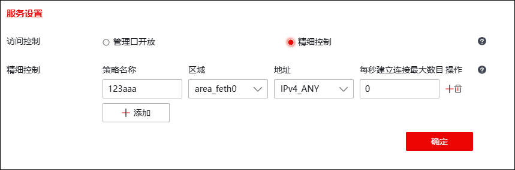
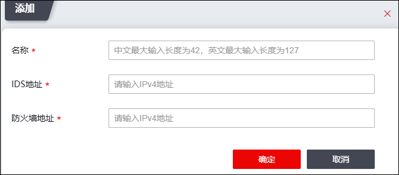
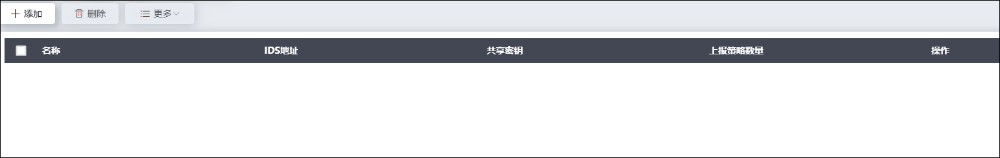
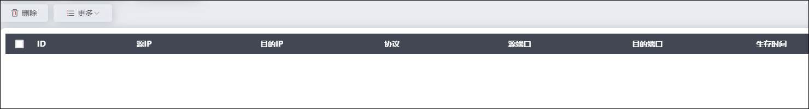

IDS联动技术基于IDBP（Intrusion Detection and Blocking Protocol，入侵检测与阻断）协议，通过IDS（入侵检测系统）探测器与NGFW有机联动，以实现积极主动抵御异常流量。一台防火墙可同时联动多台IDS类设备；当IDS设备与防火墙联动时，IDS探测器会实时监视网络活动、当捕捉到可疑的网络攻击活动时，IDS设备会根据该入侵或可疑活动的性质，发送通知报文给防火墙，再由防火墙阻断与之有关的网络地址的通信连接。总之，配置IDS联动可以将入侵检测系统的实时反应能力与防火墙的静态访问控制能力结合起来，生成一种基于网络活动的动态安全防护策略，达到对网络的安全防护。
启用联动功能时，NGFW和IDS设备均需进行相应配置，关于IDS设备有关防火墙联动的配置请参见IDS设备用户手册。
在NGFW中配置IDS联动的具体操作如下：
| 步骤1 | 联动服务设置。 |
1）选择 。
2）激活“服务设置”页签，如下图所示。

各项参数的具体说明如下表所示。
参数 |
说明 |
|---|---|
访问控制 |
选择访问控制类型。可选择：管理口开放、精细控制。 管理口开放，IDS联动服务配置管理口后，由任意地址发出从管理口进入，均可访问。管理口是指本地服务对管理区域MANAGE_AREA开放，请确保MANAGE_AREA接口配置无误。 精细控制，是指执行配置多条策略，并由策略决定IDS联动服务的权限，配置后限制从指定地址发出指定接口进入才可访问。 |
精细控制 |
输入策略名称（不可重复），区域对象（报文的入接口）、地址对象（报文的源IP地址），设置每秒建立连接最大数，取值范围：0-65535，0表示不作限制。 说明： 区域MANAGE_AREA表示管理域，地址IPv4_ANY表示所有IPv4地址，地址IPv6_ANY表示所有IPv6地址，地址GROUP_ADDRESS_ANY表示所有IP地址。 |
| 步骤2 | 设置IDS联动设备地址。 |
1）激活“联动配置”页签，点击『添加』，弹出“添加”窗口，如下图所示。

各项参数的具体说明如下表所示。
参数 |
说明 |
|---|---|
名称 |
必填项，填写该IDS联动配置项的名称。 |
IDS地址 |
必填项，设置IDS设备的IPv4地址，格式为A.B.C.D。 |
防火墙地址 |
必填项，设置NGFW设备与对端设备进行联动通信的接口IPv4地址，格式为A.B.C.D。 |
2）点击【确定】按钮完成配置。
配置联动设备地址后，NGFW会自动生成一个16位的共享密钥（用于IDS和NGFW之间的身份认证），同时生成一个包含该共享密钥、NGFW设备地址和IDS设备地址的key文件，文件名格式为：TOS.IDS [x.x.x.x].key，其中，“x.x.x.x”为IDS设备地址。通过点击图中操作列的“”图标，可以将key文件下载到本地。说明：在部分检测设备中配置联动功能时需使用该Key文件中的共享密钥。如下图所示。

| 步骤3 | 查看联动状态。 |
在成功配置IDS联动后，激活“联动状态”页签可以查看动态生成的IDS联动策略，策略显示了已经阻断的通信连接信息，包括阻断的源IP、目的IP、源端口、目的端口、协议类型、生存时间，界面如下图所示。
